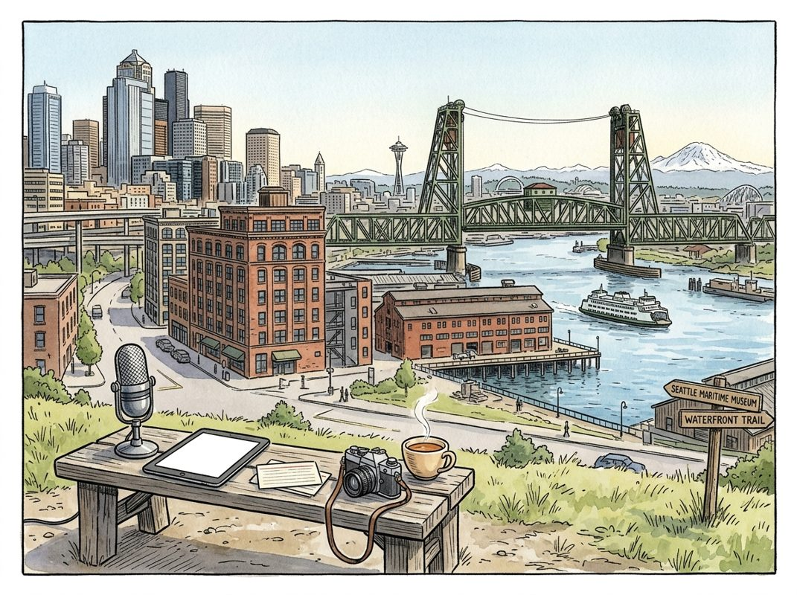

9/16

今日更新
JD Vance on AI, Entitlement Fraud, Iran War, Israel, H-1B Abuse & the Midterms
来源：All-In with Chamath, Jason, Sacks & Friedberg
状态：已读完整音频 transcript
本期播客深入探讨了JD Vance所代表的美国保守派政府在执政期间的关键政策与理念，涵盖了边境安全、经济再工业化、财政赤字、AI治理、H-1B改革及外交策略等多个核心议题。它为中文读者提供了一个了解美国当前政治格局和未来走向的独特视角，尤其适合关注美国内政外交、科技政策及中期选举的听众。
- 执政成就与核心理念：边境安全与再工业化：JD Vance首先回顾了本届政府在过去两年中的主要成就。他最引以为傲的两点是：成功扭转了非法移民的流入趋势，使非法移民数量比上任之初减少了约300万，并强调这是战后西方政府中罕见的逆转。其次，他持续关注并推动美国制造业的再工业化和资本重组。Vance指出，过去四十年，美国经济过度依赖服务、科技和金融，而忽视了实体制造。他认为，特朗普总统深刻理解这一点，并通过数万亿美元的新投资和新工厂建设，成功扭转了这一长达40年的趋势，尽管全面修复尚需时日，但这已是本届政府最重要的遗产。
- 回应民意关切：中东冲突与通胀挑战：面对选民对“不发动对外战争”和“控制通胀”承诺的质疑，Vance解释了政府在中东问题上的立场。他指出，尽管总统致力于避免外国干预，但伊朗核武器问题和其对全球能源市场的威胁（如袭击商船）迫使美国采取行动，以保护地区资产并确保石油和天然气供应。他认为，这是一种负责任的行动，而非单纯的战争。关于通胀，Vance承认3.5%的通胀率仍偏高，但强调相比拜登政府时期9.5%的峰值，已取得显著进展。他呼吁选民支持那些已在解决问题上取得实质性进展的执政者，而非导致问题产生的旧政府。
- 财政赤字与反欺诈行动：针对日益增长的财政赤字和市场对美元稳定性的担忧，Vance表示政府高度重视。他特别提到了其主导的反欺诈工作，已为美国纳税人节省了约2500亿美元，这在7万亿美元的联邦预算中虽非全部，但意义重大。他强调需继续打击政府内部普遍存在的欺诈和浪费。Vance还指出，要实现预算平衡，不能一蹴而就，而是要通过智能削减开支和促进经济增长，将财政赤字占GDP的比例降至可持续水平。他批评国会中许多人（包括两党）缺乏认真对待开支问题的意愿，并强调需要跨党派的长期解决方案。
- 能源基建短板与AI治理的“弗兰肯斯坦”困境：Vance深入探讨了美国在能源基础设施方面的严重不足，指出自2005年以来，中国的电力生产量已是美国的三倍，而美国几乎停滞不前。他认为，电力供应不足是导致数据中心等新产业发展受阻、电费上涨，并引发民众反弹的根本原因。他呼吁美国必须大规模建设更多电力设施，实现“廉价到无需计量”的电力愿景。谈及AI，Vance对一些AI前沿开发者提出“一世界治理结构”的呼吁表示质疑，并用“弗兰肯斯坦”比喻AI的潜在风险。他认为，如果开发者创造了危险的AI，首先应停止，其次应提供防御工具，而非寻求政府监管来解决自身问题。
- 总统的风险精神与H-1B签证改革：Vance分享了与总统共事的体验，称总统是一位极具企业家精神和冒险精神的领导者，工作投入，不眠不休。他赞扬总统不走寻常路，敢于承担政治风险，专注于“正确的道路”而非“简单的道路”，这对于扭转美国长期衰退至关重要。在H-1B签证改革方面，Vance指出该项目存在大量欺诈，且国会缺乏改革意愿。因此，政府采取行政手段，例如征收10万美元的费用，并阻止那些一边裁员美国工人一边申请H-1B签证的公司。他强调H-1B签证应服务于引进真正的人才以丰富美国经济，而非取代低薪美国工人。
E251｜推理芯片之战：聊聊Groq、Cerebras与OpenAI三大路径与Bill Dally的设计哲学
来源：硅谷101
原链接：https://sv101.fireside.fm/264
状态：已读完整音频 transcript
这期播客深度剖析了AI推理芯片领域的竞争格局，重点对比了Groq（以软件定义硬件实现极致低延迟）、Cerebras（晶圆级架构专攻超大规模训练）和OpenAI（出人意料地选择DRAM）三大公司的技术路径与设计哲学。对于希望理解大语言模型硬件瓶颈、算力与带宽权衡以及AI芯片未来发展方向的中文读者而言，这是一份极具价值的深度纪要。
- 训练与推理芯片的本质差异：商业模式与技术瓶颈的重塑：嘉宾们首先阐明了AI芯片在训练和推理阶段的不同需求。从商业模式看，训练大模型初期投入巨大，没有直接回报，因此企业更倾向于不惜成本追求最强大的模型，以期在未来推理场景中收回投资。而推理则是一个直接产生商业价值的环节，用户为每个Token付费，这使得推理芯片的设计必须高度关注性价比和成本效益。从技术层面看，训练通常涉及海量数据和高并行度，是典型的“算力密集型”任务，GPU凭借其强大的计算能力和HBM（高带宽内存）提供的带宽优势得以充分利用。然而，大语言模型（LLM）的推理，特别是Token的自回归生成阶段，呈现出强烈的顺序性。这意味着每生成一个新Token，都需要将整个大模型（例如1.6T参数）从存储介质（如HBM）重新读取到计算单元进行处理。这使得推理过程成为一个“内存带宽密集型”任务，而非算力密集型。GPU为了提高其算力利用率，不得不采用“批量处理”（batching）的方式，将多个用户的推理请求打包处理，这虽然提升了吞吐量，却显著增加了单个用户的延迟，因为用户不仅要等待自己的Token计算完成，还要等待同批次其他用户的Token。
- Groq的“软件定义硬件”哲学：以确定性实现极致低延迟：Groq的核心设计理念深受其首席科学家Bill Dally（现代GPU并行架构奠基者之一）的影响，即“软件定义硬件”和“确定性执行”。Dally认为，硬件应设计得让软件能够完全掌控和高效利用，避免引入复杂的、不可预测的硬件特性（如缓存、分支预测、乱序执行），这些特性虽然在通用计算中能提高平均性能，但在特定AI工作负载下反而可能导致效率低下和性能波动。Groq的芯片拥有高达230MB的片上SRAM，提供了惊人的80TB/s带宽，远超外部HBM。其独特之处在于，它没有传统意义上的缓存，而是依赖一个高度复杂的编译器。这个编译器能够精确地将计算操作和数据流映射到硬件上，实现完全可预测的执行路径和延迟。这种设计消除了“暗硅”（因工作负载不匹配而未被充分利用的芯片区域），使得芯片的每一个晶体管都能被高效利用。这种确定性架构带来了显著的性能提升，例如，Groq芯片在处理Llama 2 70B模型时，能达到80毫秒的极低首Token延迟，并以每秒300个Token的速度进行生成，远超传统GPU。
- Cerebras的晶圆级架构：为超大规模训练而生：Cerebras采取了截然不同的路径，其核心产品是晶圆级引擎（WSE），将一整块硅晶圆（而非切割成多个小芯片）作为一个单一的处理器。这种巨型芯片集成了85万个AI核心和40GB的片上内存，旨在为训练超大规模AI模型提供前所未有的计算能力。Cerebras的设计哲学是消除传统多芯片集群中存在的芯片间通信瓶颈（如InfiniBand），通过将所有计算单元和内存集成在同一块晶圆上，实现极高的内部带宽和低延迟通信。这对于需要将整个模型参数和中间激活值都保存在片上内存以避免频繁数据传输的训练任务尤为有利。尽管Cerebras在训练超大模型方面展现出强大潜力，但其制造成本极高（良率是巨大挑战），且其架构更侧重于单一、巨型模型的训练，对于多用户、低延迟、高性价比的推理场景，其优势并不明显。它代表了AI芯片领域中一种追求极致规模和训练性能的独特探索。
- OpenAI的推理芯片：DRAM存储选择的深层考量：在播客录制当天，OpenAI发布了其首款推理芯片，令嘉宾们感到意外的是，它选择了成本更低的DRAM作为主要存储介质，而非业界普遍认为更适合LLM推理的HBM。嘉宾推测，OpenAI此举可能主要出于成本效益的考量，因为DRAM的价格远低于HBM。这与推理芯片追求性价比的商业逻辑相符。然而，考虑到当前大模型推理对内存带宽的巨大需求，这一选择也引发了业界对其性能表现和未来策略的讨论。这种选择可能暗示OpenAI对未来模型架构的判断。例如，如果模型通过“量化”（降低参数精度，如从16位降至8位或4位）或“稀疏化”（模型中大部分参数为零，只计算非零部分）技术，能够显著减少模型大小和实际带宽需求，那么DRAM的带宽可能足以满足需求，同时大幅降低硬件成本。此外，OpenAI也可能在系统层面有独特的优化，以弥补DRAM在带宽上的不足。
- Bill Dally的芯片设计哲学：内存是核心瓶颈，效率至上：作为GPU并行架构的奠基人，Bill Dally对芯片设计的洞察力深刻影响着AI硬件领域。他反复强调，在现代计算中，真正的瓶颈并非算力，而是“内存墙”——即计算单元处理数据的速度远超数据从内存传输到计算单元的速度。因此，解决内存问题是提升整体系统性能的关键。Dally主张芯片设计应以效率为核心，避免不必要的复杂性。他认为，一个好的硬件设计应该让软件能够最大化地利用其资源，而不是通过复杂的硬件逻辑来“猜测”软件的需求。Groq的确定性架构正是这一哲学在推理芯片领域的体现，通过消除不可预测的硬件行为，确保了资源的高效利用和性能的稳定性。Dally的观点也预示着未来芯片发展的一个重要方向：将内存和计算单元更紧密地集成，甚至实现“内存内计算”（Processing-in-Memory），以从根本上解决数据传输的瓶颈。
Jon McNeill: The Algorithm Behind Tesla and SpaceX, Why Automation Should Come Last, and Setting Unrealistic Goals
来源：In Good Company with Nicolai Tangen
状态：已读完整音频 transcript
这期播客深入探讨了前特斯拉总裁乔恩·麦克尼尔（Jon McNeill）总结的特斯拉和SpaceX背后的“创新算法”，强调通过系统性地质疑假设、删除冗余、手动优化并加速流程，最终实现自动化，从而驱动颠覆性创新和指数级增长。它适合所有希望在商业和组织中实现根本性变革、提升效率和创新能力的领导者、创业者和管理者。
- 特斯拉与SpaceX的“创新算法”：核心理念：乔恩·麦克尼尔，曾直接向埃隆·马斯克汇报工作，担任特斯拉总裁，后任Lyft首席运营官，现于DVX Ventures孵化公司。他将马斯克在特斯拉和SpaceX的成功方法论总结为一套“算法”，旨在实现非增量式的“量子级”创新。这套算法的核心在于系统性地挑战现状，通过五个关键步骤：质疑一切假设、删除所有步骤、简化与优化、加速循环时间，以及最后才自动化。麦克尼尔指出，人类天生倾向于将事物复杂化而非简化，而真正的创新始于对根深蒂固假设的质疑。这套方法论不仅是关于效率，更是关于如何通过流程创新实现突破性的产品和商业模式，从而在竞争中建立复合优势。
- 第一步：质疑一切假设——从繁到简的艺术：麦克尼尔强调，创新始于质疑那些长期未被触及的基本假设。他举例说明，特斯拉最初的在线购车流程有64,000次点击，提供超过300,000种配置组合，这极大地增加了制造复杂性和用户流失率。通过分析数据，他们发现客户主要购买两种车型：高性能版或长续航版。于是，他们大胆简化为两种核心车型，大大减少了点击次数和制造难度，反而提升了销量。另一个例子是汽车贷款文件，通常长达12页。麦克尼尔质疑其必要性，律师调查后发现，其中大部分内容并非法律或法规强制要求。最终，他们尝试将其简化为一页甚至一段的协议。他定义“明智的规则”是基于安全、法律或物理定律的，而其他一切在被证明合理之前，都应被视为“愚蠢的规则”，需要被挑战和简化。
- 第二、三、四步：删除、简化、优化与加速——流程的精炼与提速：在质疑假设之后，接下来的步骤是删除不必要的环节，并对剩余流程进行简化、优化和加速。麦克尼尔建议团队将流程的每一步都用便利贴贴在墙上，然后问一个关键问题：客户会为哪一步付费？客户不会为质量检查或采购订单付费，他们只为产品付费。因此，许多中间的质量检查环节被删除，取而代之的是让执行者对质量负责，并引入“退回”机制来衡量质量问题。他引用了“最好的部分就是没有部分”的理念。在简化和删除之后，新的流程首先要进行手动测试，而非立即自动化。因为速度能揭示流程的缺陷，过早地加速一个糟糕的流程只会更快、更昂贵地得到糟糕的结果（如AI应用于低效流程）。通过不断加速，消除停滞时间，并从重复中建立“肌肉记忆”，流程会变得更高效。丰田的“现金流速度”概念（从原材料到成品仅需4天，而特斯拉最初需15天）是速度思维的典范，中国企业也通过“996”和流程优化实现了快速发展。特斯拉通过“每周心跳”机制，确保每周都能达成季度目标，从而实现持续的快速迭代和进步。
- 第五步：最后自动化——特斯拉“生产地狱”的教训：自动化被放在最后一步，因为麦克尼尔将其比作“浇筑混凝土”，一旦完成，要改变就如同用电镐破拆一样困难。特斯拉在Model 3生产初期曾犯下巨大错误，他们设计了汽车制造史上最自动化的生产线，完全基于数字模型，甚至在工厂动工前就完成了所有自动化布局。然而，当机器实际安装时，他们发现机器之间距离过近（仅6英寸），导致人工校准困难重重。这条生产线最终未能投入使用，特斯拉因此差点破产，因为Model 3的现金流未能如期产生。他们最终通过在工厂外搭建帐篷，手动生产汽车，才得以自救。这个惨痛的教训让他们认识到：必须先完善流程，再进行自动化。DoorDash的创始人也采取了类似策略，先手动运营，再逐步自动化。麦克尼尔警告，将AI应用于旧的、笨重的流程，只会“加速灾难”，正确的做法是先优化流程，再利用AI的力量进一步提升效率。
- 创新、垂直整合与不切实际的目标：这套算法不仅提升效率，更是驱动“量子级”创新的关键。马斯克每周亲自推动业务的简化和创新，将巨大的突破分解为每周的微小进步。麦克尼尔指出，成功的创新型公司往往倾向于垂直整合，因为当现有系统或部件无法满足创新需求时（例如机器人执行器），控制整个生产系统是实现突破的唯一途径，特斯拉、比亚迪和小米都是如此。此外，设定“不切实际”的目标（如50-100%的增长而非5-10%）至关重要，它能迫使团队彻底重新思考工作方式，而非沿用旧有模式。史蒂夫·乔布斯的“现实扭曲力场”也体现了这一点。目标不应荒谬到让人放弃，但必须足够宏大，以激发全新的思维和解决方案。特斯拉和SpaceX的文化特点是“谦逊与自信”并存：员工会说“我不知道怎么做”，但紧接着是“但我们会想办法解决”。这种心态鼓励快速学习和从失败中吸取教训，从而建立对竞争对手的复合优势。
Michael Moritz - Lessons From 40 Years of Investing and Writing - [Invest Like the Best, EP.491]
来源：Invest Like the Best
原链接：https://colossus.com/episode/the-outsider/
状态：已读完整音频 transcript
本期播客深入探讨了迈克尔·莫里茨（Michael Moritz）长达40年的投资与写作生涯，通过其家族的难民背景、童年经历和对人性的深刻洞察，揭示了驱动伟大成就的内在力量与代价，适合所有对个人成长、领导力、风险投资及社会变迁感兴趣的中文读者。
- 童年烙印与生存本能的塑造：迈克尔·莫里茨的家族是二战时期从纳粹德国逃往威尔士的犹太难民，这段经历在他身上留下了深刻的烙印。他指出，父母在孩子12-14岁前的言行举止，而非口头故事，构成了其性格的“天使与魔鬼”。作为少数群体中的少数，莫里茨从小便培养出强烈的生存本能、警惕性与坚韧不拔的毅力。他以两位祖父为例：一位因对国家和养老金的信任而迟疑，最终未能逃脱；另一位则凭借街头智慧和创业精神，在战争爆发前72小时惊险逃离。莫里茨从中汲取的核心教训是，人必须时刻为自己准备一个“避风港”，以应对不可预测的危机，这种“局外人”心态贯穿了他的一生。
- 洞察人性的“14年方法论”：莫里茨在职业生涯中，尤其是在风险投资领域，发展出一种独特的“14年方法论”，即通过深入了解一个人生命最初12-14年的经历来洞察其核心驱动力。他首次意识到这种方法的重要性是在撰写关于李·艾科卡（Lee Iacocca）的书时，发现艾科卡作为意大利移民后代，其“局外人”感受和不懈奋斗精神根植于童年。莫里茨认为，这些早年形成的印记不会随时间消失，而是以不同强度持续影响着个体。他通过收集这些“点滴”信息，最终勾勒出被访者的完整肖像，这成为他评估创始人和团队的关键工具。
- 偏执狂：伟大成就的驱动与代价：莫里茨观察到，无论是艺术创作还是商业建设，许多伟大成就的背后都存在一种“偏执狂”（monomania）式的专注。这种对目标完全痴迷、排除一切不必要干扰的状态，能够催生非凡的成果。他以史蒂夫·乔布斯（Steve Jobs）和英国画家弗兰克·奥尔巴赫（Frank Auerbach）为例，后者一生几乎每天作画，甚至为了艺术牺牲了家庭生活。然而，莫里茨也清醒地认识到，这种极致的专注往往伴随着巨大的代价，最常见的是对人际关系的损害。他认为，虽然偏执狂能带来成功，但其对个人生活和情感的冲击也值得深思。
- 从记者到风险投资家的转型之路：莫里茨的职业生涯始于记者，曾为《时代》杂志工作，甚至因一篇他不满意的史蒂夫·乔布斯报道而离开。他渴望进入风险投资领域，却因缺乏技术背景和行业经验而屡遭拒绝。然而，红杉资本（Sequoia Capital）的创始人唐·瓦伦丁（Don Valentine）看到了他的潜力，认为成功的投资者不一定需要传统背景，并以投资银行家亚瑟·洛克（Arthur Rock）为例，后者在没有技术背景的情况下成功投资了英特尔和苹果。莫里茨认为，他能成功得益于80、90年代风投行业的独特环境：信息不对称、竞争者少、易于与创始人建立深厚关系。他坦言，在当今信息透明、竞争激烈的市场，他可能难以复制当年的成功。
- 领导力：理解与激发潜能：莫里茨在领导红杉资本期间，将“不搞砸”、“永远追求下一次成功”和“抓住新的市场机遇”作为核心原则。他特别强调了为非营利性投资者创造价值的责任感。在团队建设方面，他从与性格迥异的同事（如道格·莱昂内）和曼联传奇教练亚历克斯·弗格森（Alex Ferguson）的合作中，学到了“宽容”和“理解他人需求”的重要性。弗格森以其严厉著称，但莫里茨指出，他更希望获得球员的尊重而非爱戴，并在球员最艰难的时刻给予支持。这种深入理解个体动机并激发其潜能的领导方式，对莫里茨影响深远。
历史精选
Acquired Live at Radio City Music Hall (Presented by J.P. Morgan)
来源：Acquired
原链接：https://www.acquired.fm/episodes/acquired-live-at-radio-city-music-hall-presented-by-j-p-morgan
状态：已读网页 transcript
这期播客深入探讨了摩根大通（JPMorgan Chase）董事长兼首席执行官杰米·戴蒙（Jamie Dimon）如何从被花旗集团（Citigroup）解雇的低谷中崛起，通过建立“堡垒式资产负债表”和独特的风险文化，将一家陷入困境的地区银行（Bank One）转型为全球最具系统重要性的金融机构，并在多次金融危机中逆势而上。这期节目适合所有对企业领导力、风险管理、金融史以及如何在逆境中实现卓越感兴趣的中文读者。
- 从低谷到巅峰：戴蒙的职业转折点：播客开篇，Acquired主持人本·吉尔伯特（Ben Gilbert）和大卫·罗森塔尔（David Rosenthal）在纽约无线电城音乐厅（Radio City Music Hall）的盛大舞台上，邀请了摩根大通董事长兼首席执行官杰米·戴蒙作为首位嘉宾。节目聚焦戴蒙长达20年的职业生涯，特别是他如何将摩根大通打造成全球最具系统重要性的金融机构。故事始于1998年，戴蒙在与导师桑迪·威尔（Sandy Weill）共同创建了现代花旗集团后，却意外被解雇。当时，他被认为是花旗的接班人，这一事件震惊了华尔街。戴蒙回忆，被解雇后他经历了18个月的“迷茫期”，甚至考虑过加入亚马逊。然而，他最终选择接手一家位于芝加哥、市值仅200亿美元且问题重重的地区银行Bank One，并投入了个人净资产的一半（约6000万美元）购买公司股票，以示破釜沉舟的决心。这一举动不仅展现了他的领导魄力，也为他日后在金融界的传奇奠定了基础。
- “堡垒式资产负债表”：戴蒙的风险管理哲学：戴蒙接手Bank One后，发现其内部管理混乱，系统分散，信贷风险极高，甚至比花旗集团承担的美国企业信贷风险还要大。他立即着手改革，核心理念是建立“堡垒式资产负债表”（Fortress Balance Sheet）。这并非意味着规避所有风险，而是要“正确地定价风险，并理解潜在结果”。戴蒙强调，历史反复证明，市场会剧烈波动，过度杠杆和激进会计是金融机构的致命伤。他通过严格的压力测试，将高收益债券的压力测试标准从行业普遍的40%提高到“史上最差”的17%（后来2008年金融危机中达到20%），确保公司能够应对极端情况。他坚信“最坏的情况会发生，所以要为此做好准备”，宁愿短期利润略低，也要确保公司在危机中能够生存下来。这种“不倒闭”的哲学，成为摩根大通在后续危机中屹立不倒的关键。
- 战略性并购：摩根大通的崛起之路：在戴蒙的领导下，Bank One在四年内市值翻倍。2004年，Bank One与摩根大通（JPMorgan Chase）合并，被形容为“平等合并”，尽管Bank One股东获得了合并后公司42%的股份，戴蒙也凭借协议中的特殊条款，在18个月后顺利成为合并后公司的CEO。戴蒙指出，他看重的是业务逻辑和执行能力，而非仅仅是摩根大通的“蒂芙尼”品牌价值。他认为，两家公司的业务具有高度互补性，能够产生巨大的协同效应，例如消费者业务、信用卡业务和投资银行业务。他强调，并购成功与否，关键在于能否有效整合系统、管理团队和企业文化，避免内耗。这次合并不仅扩大了摩根大通的规模，也为戴蒙在即将到来的金融风暴中发挥关键作用奠定了基础。
- 2008年金融危机：力挽狂澜与政府的“背叛”：2006年，戴蒙预见到次贷市场的风险，开始收缩次贷业务并囤积流动性，将摩根大通的杠杆率控制在远低于其他大型投行的水平。2008年3月13日，贝尔斯登（Bear Stearns）濒临破产，戴蒙在生日当天接到求助电话。摩根大通在美联储的协助下，仅用三天时间完成了尽职调查，以每股2美元的价格收购了贝尔斯登，避免了系统性崩溃。然而，戴蒙透露，这次“救市”行动最终让摩根大通付出了150-200亿美元的代价，其中50亿美元是政府就贝尔斯登遗留的抵押贷款问题向摩根大通征收的罚款。这让戴蒙感到被“背叛”，并表示“不会再信任政府”。尽管如此，六个月后，当华盛顿互惠银行（WaMu）倒闭时，摩根大通再次出手收购，这次收购因其健康的资产负债表和战略意义，被戴蒙视为一次成功的交易，并迅速通过增发110亿美元股票进一步巩固了“堡垒式资产负债表”。
- 2023年银行危机：历史的重演与创新：2023年，硅谷银行（Silicon Valley Bank）和第一共和银行（First Republic）相继倒闭，摩根大通再次介入，收购了第一共和银行。戴蒙指出，这两家银行的失败并非因为“未投保存款”，而是因为“集中存款”和管理层对利率风险的忽视。大量风险投资公司建议其投资组合公司撤资，导致银行在一天内流失数百亿美元存款。此外，他们还利用“持有至到期”（held to maturity）的会计准则，隐藏了因利率上升导致的债券资产巨额浮亏。戴蒙强调，摩根大通始终避免这种激进的会计操作，并对利率风险进行严格管理。此次危机后，摩根大通吸取教训，积极拓展风险投资生态系统服务，并在全美开设了“摩根大通金融中心”（JPMorgan Financial Center），提供高净值客户的综合性、管家式服务，将危机转化为创新和增长的机遇。
Games Workshop: The World of Warhammer - [Business Breakdowns, EP.239]
来源：Business Breakdowns
原链接：https://colossus.com/episode/games-workshop-the-world-of-warhammer
状态：已读网页 transcript
这期播客深入剖析了Games Workshop如何凭借其核心IP“战锤”建立起一个高利润、高忠诚度的独特商业帝国。它适合对IP运营、垂直整合以及小众市场财富创造感兴趣的投资者和商业分析师。
- Games Workshop的独特演进之路：Games Workshop（GW）及其旗舰IP“战锤”（Warhammer）对北美听众可能相对陌生，但其商业模式与迪士尼、艺电（EA）、任天堂等IP巨头有异曲同工之妙。播客嘉宾KNA Capital总裁兼首席投资官Todd Wenning分享了他多年前发现GW的经历。GW的独特之处在于其发展历程：最初作为分销商起家，逐步转型为内容创作者，并最终实现了高度垂直整合，掌控了从IP创作、产品设计、生产制造到零售分销的整个价值链，这为其后续的成功奠定了基础。
- “战锤”世界的魅力与社群效应：“战锤”IP拥有悠久的历史和深厚的文化底蕴，其核心产品是精美的微缩模型，玩家需要购买、组装、涂色，并用它们进行桌面游戏。GW在全球拥有大量零售店，这些门店不仅是销售点，更是社区中心，为玩家提供聚会、游戏和交流的场所。这种模式培养了极高的用户忠诚度。播客强调，“战锤”的流行背后存在强大的“隐藏网络效应”：玩家投入大量时间金钱在模型上，并参与社区活动和赛事，这种投入反过来加深了他们对IP的粘性，并吸引新玩家加入，形成良性循环。
- 卓越的财务表现与垂直整合优势：GW的商业模式以其卓越的盈利能力著称。得益于高度垂直整合，公司能够有效控制成本并最大化利润。其毛利率和净利率甚至可以与奢侈时尚品牌相媲美，这在游戏行业中实属罕见。这种高利润率转化为强大的现金流生成能力，为公司提供了充足的资金进行再投资、IP开发以及向股东派发股息。这种财务实力是GW能够持续投入IP建设和社区维护的关键，也使其在面对市场波动时具备更强的韧性。
- IP的增长潜力与授权模式：尽管“战锤”在特定圈层内广受欢迎，但其在全球范围内的知名度仍有巨大提升空间。播客指出，随着IP的持续发展和推广，更多人将认识并加入“战锤”的世界。GW的增长驱动力之一是其成熟的授权许可模式，通过将IP授权给视频游戏、电影、电视剧等其他媒体形式，如亚马逊Prime上的内容，公司能够有效扩大IP的影响力，吸引新的受众，并将核心粉丝群体的热情转化为更广泛的商业价值。这种策略有助于将“战锤”从一个小众爱好推向主流文化。
- 强大的护城河与独特的管理结构：GW的业务具有强大的护城河。其核心IP的深度、玩家社区的忠诚度、以及垂直整合带来的成本优势，共同构筑了难以逾越的竞争壁垒。此外，GW还以其独特的“扁平化”管理结构而闻名，这种结构鼓励员工的自主性和创造力，有助于保持组织的灵活性和创新能力。在资本配置方面，GW表现出高度的纪律性，公司注重将大部分利润以股息形式返还给股东，这反映了其对自身现金流生成能力的信心，也吸引了长期价值投资者。